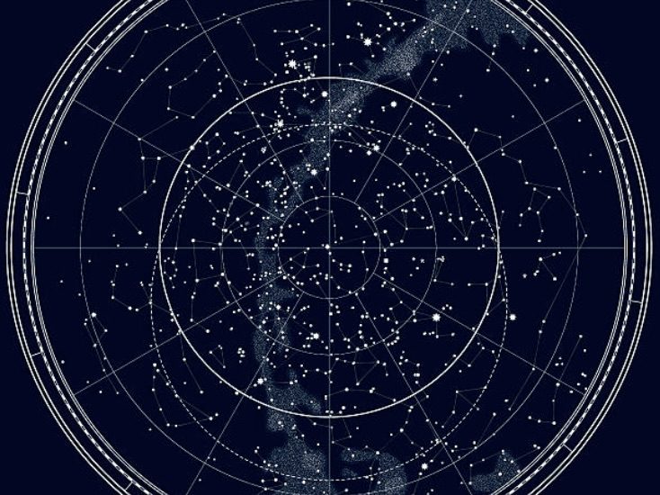
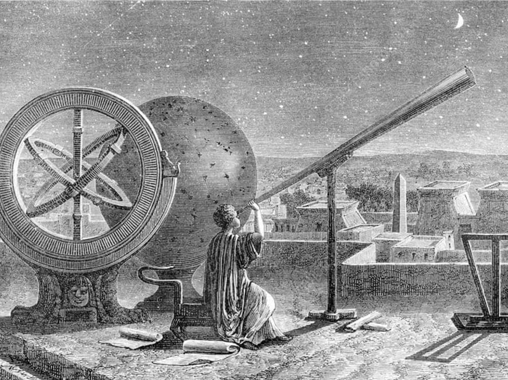
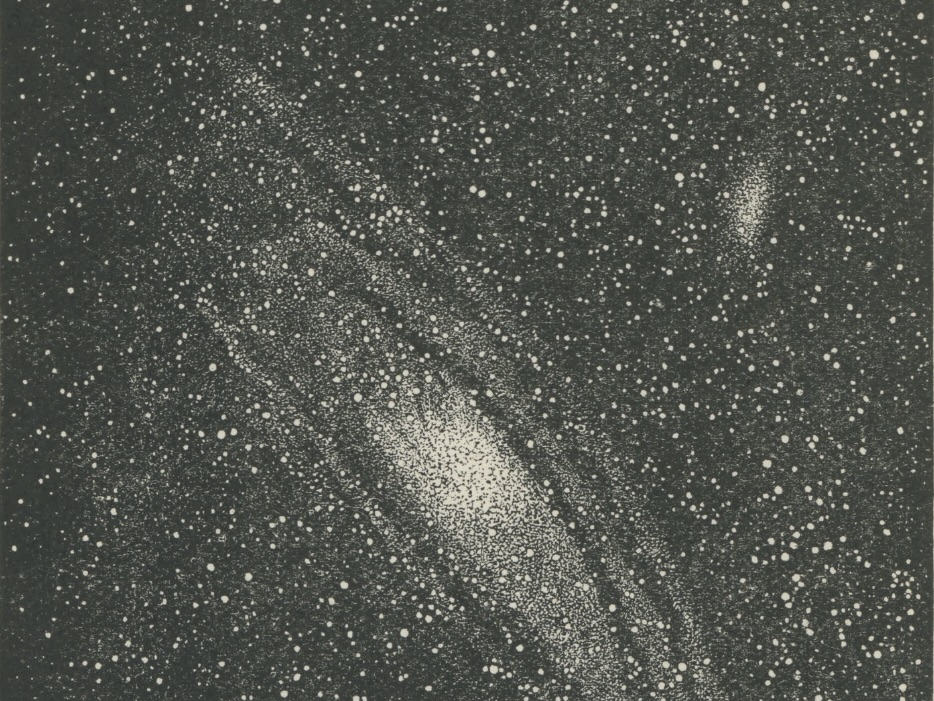

I am currently a fourth-year undergraduate student in Astronomy and Physics at
the University of Toronto. After graduation, I would like to pursue my studies in
graduate school. My main areas of interests are planetary dynamics, stellar populations
and large scale structures.

Science is communication. I've been involved in various outreach initiatives throughout
my undergraduate, namely Discover the Universe (Dunlap Institute), and the Physics Help Initiative
(UofT). I'm very passionnate about it.

See the dropdown menu for all various things I love to do and share.
This includes the community work I do, some of my writings, and other.
These are more personal aspects of my life, but fun nonetheless.